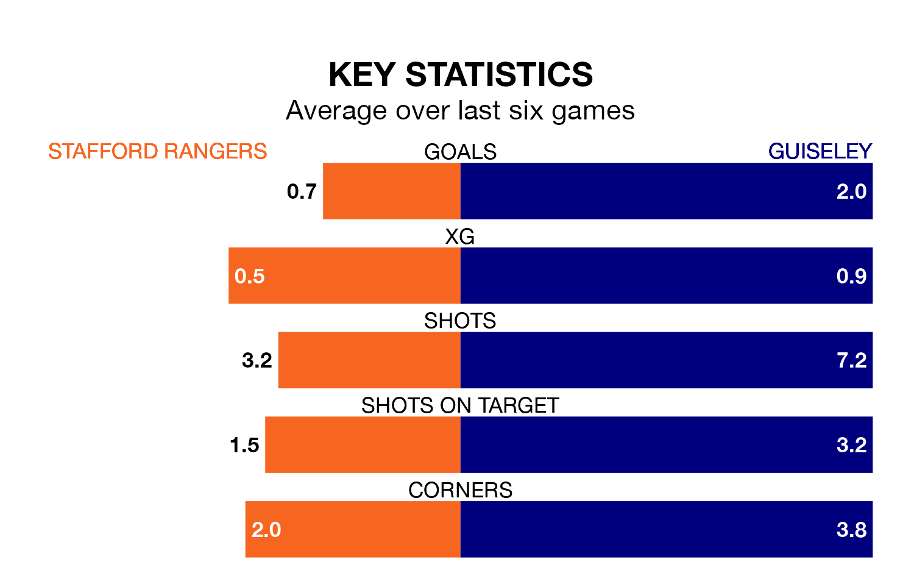

Guiseley are strong favourites to take all three points despite Stafford Rangers's home advantage in Saturday's match at Marston Road.
*Betting Company* are offering odds of 1.62 on Guiseley sealing the win, with the visitors sitting seventh in the Northern Premier League table.
Stafford, who are 22nd in the league and 31 points behind the Lions, are priced at 4.1 to win. A draw is set at 3.9.
With 28 goals in 29 games so far this season, Stafford are the league's lowest scorers with 1.0 goals per game. And they are conceding more than average, letting in 62 goals at a rate of 2.1 per game.
Guiseley, meanwhile, are above average scorers, with 1.9 goals per game, compared to a league average of 1.7. They have conceded 1.6 goals per game.
Rangers are in bad form in the Northern Premier League, with one win and a draw from their last six games.
With three wins and a draw over that period, the Lions's form is much better – they have taken 10 points from 18, compared to the home side's four.
In the last three years, Stafford and Guiseley have played each other on three occasions. Guiseley won two of them and they drew once.
Their last meeting was on October 14, when Guiseley won 2-0 at home.
Stafford's last match was on February 17, a 1-1 draw against Hyde United.
Guiseley beat Morpeth Town 4-1 last time out, also on February 17.
Updated: 10:08 (UTC), 23/02/24